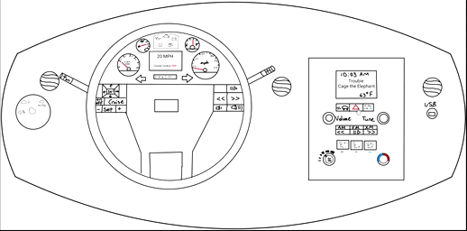
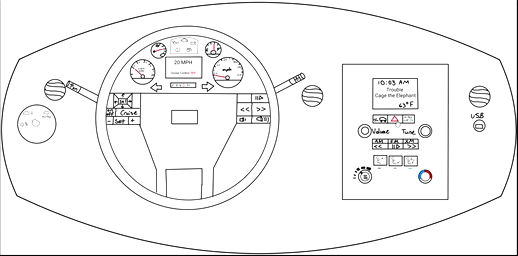

Changes to Dashboard:
- Music control buttons are clear and large to avoid confusion
- A digital screen has been added to make reading speed easier
- Turn signal is only one activation in each direction, avoids the signal turning off after 3 seconds
- Headlights are large and clearly marked to avoid confusion between windshield wipers
With buttons being larger and clearly marked, most confusion is dissolved. All information needed is clearly presented and easily readable to the driver.


 
